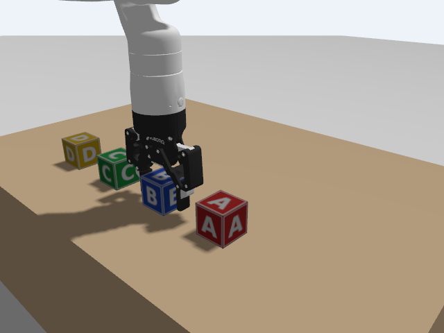
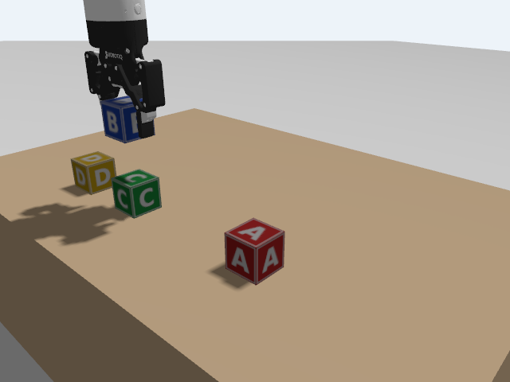
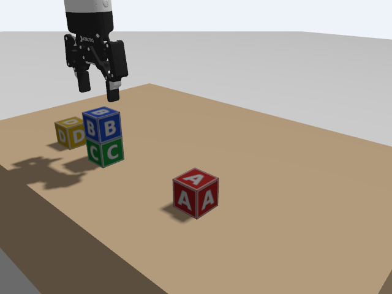

D2 · Pick and place
An action server that takes one block from where it is and puts it somewhere else, with the arm really moving in Gazebo.
1. Goal
A planner will say "put C on D". Something has to turn that into arm motion: reach the block, take it, carry it, put it down. This lesson builds that something as a ROS 2 action, /pick_place: the goal is a block's letter and the place for its centre. At the end you will have:
- a pick-and-place pattern of eight stages, each a straight line of the hand,
- straight lines in space built from the inverse kinematics of B3 (a Cartesian path),
- an action server in Python and clients in Python and C++,
- towers built and read back by the estimator of D1,
- and an honest account of what does not work in this simulation: the grip.
The arm moves for real in Gazebo: the joint trajectories, the gripper opening and closing, and the straight lines are all executed by the simulated controllers. But a block is not held by the fingers. In this simulation the Robotiq gripper could not hold a 5 cm block (the tests are in the Concepts). So a block "in the gripper" is carried by moving it with Gazebo's set_pose service 50 times a second, and the blocks of this lesson are static models that only that service moves. This is a simplification of the digital twin, and an open problem for the lab: the twin does not yet reproduce how the real gripper holds a block.
Run in the course container, Gazebo headless: the Python server with the Python and the C++ client, the pick-and-place of one and of several blocks, towers of two and three blocks, and the refusal of a place that the hand cannot reach. MoveIt is not used. The real arm was not tried (the grip would be real there: the lesson's simplification does not apply), and neither were the window of Gazebo, a tower of four blocks (the hand cannot reach it), and the C++ server (there is none).
2. Concepts
The pattern
Every pick and every place is the same movement: come from above, go down in a straight line, act, go back up. Coming from above and leaving upwards means the open fingers never sweep sideways through the neighbouring blocks. The eight stages, for a block at (bx, by) going to (tx, ty):
stage feedback of the action.A straight line from joint angles
A joint trajectory interpolates joint angles. If you ask the controller for the angles at two points, the hand follows some curve between them, not a straight line. To get a straight line, divide it into short steps (here 1 cm), compute the joint angles of every step with the inverse kinematics of B3, and send all of them as one trajectory with the times at which to reach them. The time of each point is its distance along the line divided by the speed (0.15 m/s), plus 0.3 s at the start. This is a Cartesian path. MoveIt has one too (compute_cartesian_path), and it does the same.
The pose of the hand
The hand always points down, fingers along y (as in C4: roll 180°, pitch 0°, yaw 90°). The block rows of the lab run along y, so open fingers straddle one block without touching its neighbours (12 cm apart). The height of the hand when gripping is the block's centre plus 0.135 m: from C5, the fingers reach about 14 to 15 cm below end_effector_link, and the tips should be near the block's centre. The hover height is 0.58 m: the top of a tower of three blocks is at 0.40, and the lowest part of a carried block is 16 cm below the hand, at 0.42.
Seven joints, one pose: joint 3
As in B3, a hand pose fixes six numbers and the arm has seven joints, so one joint can be chosen freely. The solution the IK finds first for "hand pointing down at the table" has joint 3 at 3.14 rad, the edge of ±π, where MoveIt later reports START_STATE_INVALID (B5, C5). The IK of this lesson keeps joint 3 at 2.5 rad and solves for the other six. The arm then keeps the same tidy shape wherever the hand goes: the elbow up, nothing sweeping over the table. (A walk with joint 3 fixed was tested from 3.1 down to 1.7 rad with the same pose; below that the pose is not reachable.)
The IK starts each search from a known configuration (READY_Q, a solution for the hand at (0.50, 0.002, 0.55)) and walks in small steps to the wanted position, so that it stays in the same branch of solutions.
Why not MoveIt here
MoveIt needs the obstacles in its scene (C5), and the block in the gripper would have to be attached to the hand, and removed again, at each step. Its IK starts from random seeds: in the tests of C5 it gave arm shapes with joint 1 at 0.7 rad and joint 5 at −2.1, which swept the elbow over the blocks. This lesson's pattern is fixed and the places are known, so deterministic IK and straight lines are simpler, and they give the same motion every time. MoveIt remains the tool for free-space moves among obstacles that you do not know in advance.
The grip: what was tried, and what was left
The first version closed the Robotiq gripper on the block, as on a real arm. In Gazebo (physics engine bullet-featherstone, as in the Kinova launch file; also the default engine, DART, once), with a 5 cm block with friction μ = 1, a 7 cm block once:
- closing the gripper to its limit (0.8) with the block between the fingers: the block was squeezed out and thrown several centimetres, or pushed up by 1.6 cm, and the fingers closed fully on nothing (the controller still says
reached_goal: true); - closing only a little beyond the contact (0.2 or 0.25): with the target 0.25 the fingers jammed at 0.14 rad and the action never finished; with 0.2 they did not move at all (0.0015 below zero) and did not finish either; in both runs the next arm move dragged or shoved the block;
- lowering the hand from 0.47 to 0.45 m, using MoveIt or the IK of this lesson: no difference;
- the Gazebo plugin
DetachableJoint(a fixed joint between the block and the hand, created by a message): the blocks moved with the arm before any message was sent, as if the joint had been made when the world loaded, and ended scattered over the table and the floor; - carrying a dynamic block by calling
set_pose20 to 100 times a second: the block's velocity keeps growing between the calls, and it sagged by up to 22 cm. It must be a static model, which has no gravity and no velocity.
The cause was not found. The suspects, in order: the simulated finger contact (the pads, and the way Gazebo handles the mimic joints of the Robotiq gripper, which Kinova's upstream notes also list as an open issue), the contact parameters, and the high speed of the gripper's joint. Until it is solved, a block is carried by set_pose, and the gripper is closed only to 0.10 rad, which leaves a few millimetres between the fingers and the block (it touches the static block at about 0.157). The arm, the gripper and the straight lines are real simulation; the grip is not.
3. Do it
-
Build
host Open a terminal in the
ros2-tutorialfolder and enter a container (this is T1):docker/run_ros2.shhost Open a terminal in the
ros2-tutorialfolder (this is T1).container The package
d2-pickplaceholds the action (d2_interfaces) and the programs (d2_pickplace); it needsc2-sim,c3-worldandd1-towersbuilt as in the earlier lessons (rebuildc2-simandc3-world: their launch files changed).for p in c2-sim c3-world d1-towers d2-pickplace; do (cd code/$p && colcon build && echo "built $p"); done for p in c2-sim c3-world d1-towers d2-pickplace; do source code/$p/install/setup.bash; doneRun the second line (the
sourceone) in every terminal of this lesson. The build ofd2-pickplacebuilds the interface package first and then the programs. -
The action
# Goal: take the block called `block` (a letter, e.g. "B") from where it is now, and put it down with its # centre at (x, y, z) in base_link, in metres. A block resting on the table has its centre at z = 0.325. string block float64 x float64 y float64 z --- # Result: how it ended bool success string message --- # Feedback: the step just finished string stage # open, above, descend, grasp, lift, transit, lower, release, retreatA goal is a letter and a position for the centre. The feedback is the name of the stage just finished. The result says whether it worked and why not.
-
The lab with static blocks
container T1:
ros2 launch c3_world lab_arm.launch.py static_blocks:=true(With a window; add
gui:=falsewithout a display.)lab_arm.launch.pyof C4 has three new arguments, which you can ignore elsewhere:static_blocks(it copies the world file with<static>true</static>added to every block's<include>),physics_engine(used for the tests of the Concepts), and a bridge for theset_poseservice of the world:/world/lab/set_pose@ros_gz_interfaces/srv/SetEntityPose, which the server uses to carry the block. Wait about 30 s. -
The server
#!/usr/bin/env python3 """Action server /pick_place: take one block from where it is and put it down somewhere else. Goal: the block's letter and the place for its centre (x, y, z in base_link). The motion is always the same pattern: open the gripper, go above the block, descend in a straight line, close the gripper, lift, move over the target at a safe height, descend, let go, retreat. Every straight line is a list of joint positions computed with the inverse kinematics of B3 (gen3.py), with joint 3 held at 2.5 rad so the arm keeps a tidy shape. The simulated Robotiq gripper cannot hold a block in Gazebo (see lesson D2), so a block in the gripper is carried by moving it with Gazebo's set_pose service at 50 Hz. The arm and the gripper really move; the grip is simulated.""" import threading import time import numpy as np import rclpy from builtin_interfaces.msg import Duration from control_msgs.action import FollowJointTrajectory, ParallelGripperCommand from d2_interfaces.action import PickPlace from geometry_msgs.msg import PoseStamped from rclpy.action import ActionClient, ActionServer from rclpy.callback_groups import ReentrantCallbackGroup from rclpy.executors import MultiThreadedExecutor from rclpy.node import Node from ros_gz_interfaces.msg import Entity from ros_gz_interfaces.srv import SetEntityPose from sensor_msgs.msg import JointState from trajectory_msgs.msg import JointTrajectoryPoint import gen3 JOINTS = [f"joint_{i}" for i in range(1, 8)] BLOCKS = "ABCD" POINTING_DOWN = [180, 0, 90] # roll, pitch, yaw (degrees) of the hand: fingers along y, pointing down Q3 = 2.5 # joint 3 is held here: the arm has 7 joints for a 6-number pose LIMIT = np.array([9, 2.24, 9, 2.57, 9, 2.09, 9]) # a known joint configuration of that shape, with the hand at (0.50, 0.002, 0.55): the start of every IK walk READY_Q = np.array([0.2922, 0.5376, 2.5, -0.8983, 0.3191, -1.7866, 1.3632]) READY_POS = (0.5, 0.002, 0.55) HOVER_Z = 0.58 # height of the hand when moving over the table (m) HAND_ABOVE_BLOCK = 0.135 # hand height minus block centre height when gripping (m) SPEED = 0.15 # hand speed on straight lines (m/s) STEP = 0.01 # distance between two points of a straight line (m) GRIP_OPEN, GRIP_CLOSED = 0.0, 0.10 # knuckle angle: open; nearly closed on the block, the fingers still a few mm from it def ik(q, pos): """Joint angles that put the hand at pos (pointing down), starting the search at q, with joint 3 fixed.""" target = gen3.pose_from(pos, POINTING_DOWN) q = np.array(q, float) q[2] = Q3 free = [0, 1, 3, 4, 5, 6] for _ in range(400): err = gen3.residual(q, target) if np.linalg.norm(err) < 1e-8: break jac = gen3.jacobian(q, target)[:, free] dq = -jac.T @ np.linalg.solve(jac @ jac.T + 0.01 ** 2 * np.eye(6), err) q[free] += np.clip(dq, -0.1, 0.1) q = np.clip(q, -LIMIT, LIMIT) if np.linalg.norm(gen3.residual(q, target)) > 1e-5: raise RuntimeError(f"the hand cannot reach {tuple(round(float(v), 3) for v in pos)} pointing down") return q def line(q, start, end): """Joint positions along the straight line from start to end, one every STEP metres (the first is after start).""" start, end = np.array(start, float), np.array(end, float) n = max(1, int(np.ceil(np.linalg.norm(end - start) / STEP))) out = [] for i in range(1, n + 1): q = ik(q, start + (end - start) * i / n) out.append(q) return out class PickPlaceServer(Node): def __init__(self): super().__init__("pick_place") group = ReentrantCallbackGroup() self.q = None # the 7 arm joints, from /joint_states self.block = {} # block letter -> (x, y, z), ground truth from Gazebo self.held = None # (letter, offset from the hand) while a block is in the gripper self.create_subscription(JointState, "/joint_states", self.on_joints, 10, callback_group=group) for k in BLOCKS: self.create_subscription(PoseStamped, f"/model/block_{k}/pose", lambda m, k=k: self.block.__setitem__(k, (m.pose.position.x, m.pose.position.y, m.pose.position.z)), 10, callback_group=group) self.arm = ActionClient(self, FollowJointTrajectory, "/joint_trajectory_controller/follow_joint_trajectory", callback_group=group) self.gripper = ActionClient(self, ParallelGripperCommand, "/robotiq_gripper_controller/gripper_cmd", callback_group=group) self.set_pose = self.create_client(SetEntityPose, "/world/lab/set_pose", callback_group=group) self.server = ActionServer(self, PickPlace, "pick_place", execute_callback=self.execute, callback_group=group) threading.Thread(target=self.carry_loop, daemon=True).start() self.get_logger().info("pick_place is ready") # ---- state ---------------------------------------------------------------------------------------------- def on_joints(self, msg): pos = dict(zip(msg.name, msg.position)) if all(j in pos for j in JOINTS): self.q = np.array([pos[j] for j in JOINTS]) def hand(self): return gen3.fk(self.q)[:3, 3] # ---- the simulated grip ----------------------------------------------------------------------------------- def move_block(self, letter, pos): req = SetEntityPose.Request() req.entity = Entity(name=f"block_{letter}", type=Entity.MODEL) req.pose.position.x, req.pose.position.y, req.pose.position.z = (float(v) for v in pos) req.pose.orientation.w = 1.0 self.set_pose.call_async(req) def carry_loop(self): """While a block is held, put it at the hand plus the offset it had when it was grasped, 50 times a second.""" while rclpy.ok(): held = self.held if held is not None and self.q is not None: self.move_block(held[0], self.hand() + held[1]) time.sleep(0.02) # ---- motion --------------------------------------------------------------------------------------------- def wait(self, future, what, timeout): t0 = time.time() while not future.done(): if time.time() - t0 > timeout: raise RuntimeError(f"timeout: {what}") time.sleep(0.01) return future.result() def follow(self, qs, durations): """Send the joint positions qs, reached at the given times (s) after the start, and wait until done.""" if not self.arm.wait_for_server(timeout_sec=5.0): raise RuntimeError("no joint_trajectory_controller action server") goal = FollowJointTrajectory.Goal() goal.trajectory.joint_names = JOINTS for q, t in zip(qs, durations): point = JointTrajectoryPoint(positions=[float(v) for v in q]) point.time_from_start = Duration(sec=int(t), nanosec=int((t % 1) * 1e9)) goal.trajectory.points.append(point) handle = self.wait(self.arm.send_goal_async(goal), "arm goal accepted", 5) if not handle.accepted: raise RuntimeError("the arm refused the trajectory") result = self.wait(handle.get_result_async(), "arm trajectory", durations[-1] + 15) if result.result.error_code != 0: raise RuntimeError(f"trajectory failed: {result.result.error_string}") def straight(self, end): """Move the hand to `end` in a straight line at SPEED.""" start = self.hand() qs = line(self.q, start, end) total = np.linalg.norm(np.array(end) - start) times = [0.3 + total * (i + 1) / len(qs) / SPEED for i in range(len(qs))] self.follow(qs, times) def jump(self, pos): """Move the hand to pos by the shortest way in joint space (used when the arm is not yet in the working shape, for example at the start, when it stands straight up).""" q = READY_Q.copy() for p in line(q, READY_POS, pos): # walk from the ready pose to pos, so the shape stays tidy q = p delta = np.abs(q - self.q).max() self.follow([q], [max(3.0, delta / 0.4)]) def check_reachable(self, *points): """Raise an error, before anything moves, if the hand cannot reach one of these places pointing down.""" for pos in points: q = READY_Q.copy() for p in line(q, READY_POS, pos): q = p def go_above(self, x, y): near_hover = self.hand()[2] > HOVER_Z - 0.03 and abs(self.q[2] - Q3) < 0.05 if near_hover: self.straight((x, y, HOVER_Z)) else: self.jump((x, y, HOVER_Z)) def grip(self, position): if not self.gripper.wait_for_server(timeout_sec=5.0): raise RuntimeError("no gripper action server") goal = ParallelGripperCommand.Goal() goal.command.name = ["robotiq_85_left_knuckle_joint"] goal.command.position = [float(position)] handle = self.wait(self.gripper.send_goal_async(goal), "gripper goal accepted", 5) self.wait(handle.get_result_async(), "gripper", 10) # ---- the action ------------------------------------------------------------------------------------------- def execute(self, goal_handle): req = goal_handle.request feedback = PickPlace.Feedback() def stage(name): feedback.stage = name goal_handle.publish_feedback(feedback) self.get_logger().info(name) def fail(message): self.get_logger().error(message) goal_handle.abort() return PickPlace.Result(success=False, message=message) if req.block not in self.block or self.q is None: return fail(f"unknown block '{req.block}', or no joint states yet") bx, by, bz = self.block[req.block] try: # refuse at once, with the arm still, a request the hand cannot carry out self.check_reachable((bx, by, HOVER_Z), (bx, by, bz + HAND_ABOVE_BLOCK), (req.x, req.y, HOVER_Z), (req.x, req.y, req.z + HAND_ABOVE_BLOCK)) stage("open") self.grip(GRIP_OPEN) stage("above") self.go_above(bx, by) stage("descend") self.straight((bx, by, bz + HAND_ABOVE_BLOCK)) stage("grasp") self.grip(GRIP_CLOSED) self.held = (req.block, np.array(self.block[req.block]) - self.hand()) # the grip begins stage("lift") self.straight((bx, by, HOVER_Z)) stage("transit") self.straight((req.x, req.y, HOVER_Z)) stage("lower") self.straight((req.x, req.y, req.z + HAND_ABOVE_BLOCK)) stage("release") self.held = None # the grip ends time.sleep(0.05) self.move_block(req.block, (req.x, req.y, req.z)) self.grip(GRIP_OPEN) stage("retreat") self.straight((req.x, req.y, HOVER_Z)) except Exception as error: # noqa: BLE001 (any failure ends the action the same way) if self.held is not None: # failed with a block in the gripper: put it back where it was self.held = None time.sleep(0.05) self.move_block(req.block, (bx, by, bz)) return fail(str(error)) goal_handle.succeed() return PickPlace.Result(success=True, message=f"block {req.block} is at ({req.x:.3f}, {req.y:.3f}, {req.z:.3f})") def main(): rclpy.init() node = PickPlaceServer() executor = MultiThreadedExecutor(num_threads=6) executor.add_node(node) executor.spin() if __name__ == "__main__": main()ikandlineare the IK of B3 with joint 3 fixed, and the straight line of the Concepts.gen3.py, next to the server, is the kinematics module of B3 (a copy).executeis the pattern:stage(...)publishes the feedback, the calls in between are the motions. Before the first motion it callscheck_reachablefor the four places the hand will have to be at, so that an impossible request is refused with the arm still.- The two
straightcalls with the same height (liftandtransit) are the way up and across at the hover height;go_aboveuses a joint-space move for the very first approach (from the arm standing straight up) and straight lines afterwards. carry_loopruns in its own thread: whileself.heldis set, it puts the block at the hand's position plus the offset it had at the moment of the grasp, 50 times a second. This is the simulated grip. On a real arm this thread,move_blockandheldwould disappear, and closing the gripper would be the grip.- If anything fails while a block is held, the block is put back where it was.
container T2 (open a terminal, enter a container, run the
sourceline of step 1):ros2 run d2_pickplace pick_place_server.py[INFO] [...] [pick_place]: pick_place is ready
-
The estimator
So that you can see the effect of each move on the blocks, start the estimator of D1 in a third terminal (T3, with the
sourceline):ros2 run d1_towers towers.pyros2 run d1_towers towers[INFO] [...] [towers]: A | B | C | D
-
Move a block
The client: it sends the goal, prints the stages as they come, and the result.
#!/usr/bin/env python3 """Ask the pick_place server to move a block: pick_place_client.py BLOCK X Y Z (z is the centre of the block)""" import sys import rclpy from d2_interfaces.action import PickPlace from rclpy.action import ActionClient from rclpy.node import Node def main(): if len(sys.argv) != 5: sys.exit("usage: pick_place_client.py BLOCK X Y Z") rclpy.init() node = Node("pick_place_client") client = ActionClient(node, PickPlace, "pick_place") if not client.wait_for_server(timeout_sec=10.0): sys.exit("no /pick_place server: is pick_place_server.py running?") goal = PickPlace.Goal(block=sys.argv[1], x=float(sys.argv[2]), y=float(sys.argv[3]), z=float(sys.argv[4])) send = client.send_goal_async(goal, feedback_callback=lambda m: print(" ", m.feedback.stage)) rclpy.spin_until_future_complete(node, send) done = send.result().get_result_async() rclpy.spin_until_future_complete(node, done) result = done.result().result print(("success: " if result.success else "FAILED: ") + result.message) node.destroy_node() rclpy.shutdown() sys.exit(0 if result.success else 1) if __name__ == "__main__": main()// Ask the pick_place server to move a block: pick_place_client BLOCK X Y Z (z is the centre of the block) #include <chrono> #include <cstdio> #include <cstdlib> #include <memory> #include <d2_interfaces/action/pick_place.hpp> #include <rclcpp/rclcpp.hpp> #include <rclcpp_action/rclcpp_action.hpp> using PickPlace = d2_interfaces::action::PickPlace; using namespace std::chrono_literals; int main(int argc, char **argv) { if (argc != 5) { std::fprintf(stderr, "usage: pick_place_client BLOCK X Y Z\n"); return 2; } rclcpp::init(argc, argv); auto node = rclcpp::Node::make_shared("pick_place_client"); auto client = rclcpp_action::create_client<PickPlace>(node, "pick_place"); if (!client->wait_for_action_server(10s)) { std::fprintf(stderr, "no /pick_place server: is pick_place_server.py running?\n"); return 1; } PickPlace::Goal goal; goal.block = argv[1]; goal.x = std::atof(argv[2]); goal.y = std::atof(argv[3]); goal.z = std::atof(argv[4]); rclcpp_action::Client<PickPlace>::SendGoalOptions options; options.feedback_callback = [](auto, const std::shared_ptr<const PickPlace::Feedback> feedback) { std::printf(" %s\n", feedback->stage.c_str()); }; auto handle_future = client->async_send_goal(goal, options); if (rclcpp::spin_until_future_complete(node, handle_future) != rclcpp::FutureReturnCode::SUCCESS) return 1; auto handle = handle_future.get(); if (!handle) { std::fprintf(stderr, "the goal was rejected\n"); return 1; } auto result_future = client->async_get_result(handle); if (rclcpp::spin_until_future_complete(node, result_future) != rclcpp::FutureReturnCode::SUCCESS) return 1; const auto result = result_future.get().result; std::printf("%s%s\n", result->success ? "success: " : "FAILED: ", result->message.c_str()); rclcpp::shutdown(); return result->success ? 0 : 1; }Put B on top of C: C's centre is at (0.50, 0.06, 0.325), so B's centre goes to z = 0.325 + 0.05 = 0.375. container T4 (a fourth terminal, with the
sourceline):ros2 run d2_pickplace pick_place_client.py B 0.5 0.06 0.375ros2 run d2_pickplace pick_place_client B 0.5 0.06 0.375open above descend grasp lift transit lower release retreat success: block B is at (0.500, 0.060, 0.375)
It takes about 15 seconds. The estimator (T3) saw the block leave the table and land on C:
[INFO] [...] [towers]: A | C | D held: B [INFO] [...] [towers]: A | CB | D
held: Bis the case of D1 that could not be shown there: B in the air. The towerCBis C with B on top. The side camera of C3, at three moments of this motion:
Stage 3, descend: the open fingers straddle B. 
Stages 5 to 6, lift and transit: B is in the air, in the gripper (carried by set_pose: nothing holds it).
After the retreat: B stands on C. Block A is untouched. -
The other client, and a second block
Use the other language for the next move. Put A on top of D (at y = 0.18):
ros2 run d2_pickplace pick_place_client.py A 0.5 0.18 0.375ros2 run d2_pickplace pick_place_client A 0.5 0.18 0.375open above ... retreat success: block A is at (0.500, 0.180, 0.375)
T3 now reads
CB | DA: two towers of two. (The server is in Python; the client of either language gives the same result.) Check where the blocks are:for b in A B C D; do echo -n "$b "; gz model -m block_$b -p | sed -n '/Pose/,+1p' | tail -1; doneA [0.500000 0.180000 0.375000] B [0.500000 0.060000 0.375000] C [0.500000 0.060000 0.325000] D [0.500000 0.180000 0.325000]
Exactly the requested positions: the place is where the block was put down, not where physics settled it (the blocks are static). That also means nothing here tells you whether a real stack would hold; in C3 the dynamic stacks did.
-
A request the hand cannot carry out
A tower of four needs the hand at 0.61 m at x = 0.5, and the pose "pointing down" cannot be reached there. Build a tower of three first: B (on C) onto A (on D), which makes
DAB; then ask for C on top of it (z = 0.475):ros2 run d2_pickplace pick_place_client.py B 0.5 0.18 0.425 ros2 run d2_pickplace pick_place_client.py C 0.5 0.18 0.475open ... success: block B is at (0.500, 0.180, 0.425) FAILED: the hand cannot reach (0.5, 0.171, 0.607) pointing down
The refusal came at once, with no motion: the server tried the four places before it started and the line down to (0.5, 0.18, 0.61) leaves the reachable region (the message names the first point of the line that failed: y = 0.171, z = 0.607). Nothing moved; block C is still on the table. The limit is about 0.60 m for the hand at this distance, which is why towers are at most three blocks high in this lab. Two more refusals, from the same tests: a place 28 cm further to the side than the row (the hand cannot reach (0.5, 0.281, 0.569)), and a block that is not in the world (
unknown block 'Z', or no joint states yet).
4. Check
- T2 printed the nine stages for each request, in order, and
success:at the end. - After B onto C and A onto D, the blocks are exactly at the requested positions, and the estimator said
CB | DA. - The estimator printed
held: Bwhile B was carried. - The request for the fourth level was refused with
the hand cannot reach, and nothing moved.
5. Exercise
The server does not check that the top of a block is free: it will pick D even when A stands on it. The towers are now CB | DA. Ask the server to move D (the bottom of DA) to the table, to y = −0.18 (z = 0.325). What does it answer, where does A end up, and what does the estimator say?
Answer
ros2 run d2_pickplace pick_place_client.py D 0.5 -0.18 0.325open ... retreat success: block D is at (0.500, -0.180, 0.325)
The server answers success and moves D to the table. Block A stays where it was, in the air at z = 0.375, because it is a static model and nothing carries it: it does not fall. The estimator sees it: CB | D held: A (A is neither on a block nor on the table). With dynamic blocks A would have fallen; in either case the tower DA was destroyed without a plan to do so. The server should not do it: the check "nothing is on X" belongs in front of the action, either in the server (compare the heights of all the blocks) or, better, in the symbolic layer that knows the towers (D3: it only lets you unstack the block at the top).
6. Recap
- Pick and place is one pattern: above, descend, grasp, lift, transit at a safe height, lower, release, retreat. Straight lines in and out keep the open fingers clear of the neighbours.
- A straight line is many small IK solutions sent as one joint trajectory, with times from the distance and the speed. Fix joint 3 (the redundancy of the 7-joint arm) so that the arm keeps its shape and stays away from the ±π edge.
- The action
/pick_place(block,x y z) gives the stage as feedback, refuses unreachable requests before moving, and puts a carried block back if it fails. - The grip is simulated: the Robotiq could not hold the block in Gazebo (ejected or jammed, in two physics engines), so blocks are static models carried with
set_pose. The twin is not faithful here: an open problem. - Reach limits: towers of at most three blocks at x = 0.5 (the hand cannot go higher than about 0.60 m pointing down).
- Not tested: the real arm and gripper, the Gazebo window, a C++ server, a tower of four.